Os 11 critérios de aceite da US-DIAG-04 foram verificados: 10 no navegador, combinados com a suíte automatizada, e 1 só pela suíte (isolamento entre organizações, que exige um segundo município). Nenhum critério ficou em falta e nenhum defeito foi encontrado. A família usada não tem indicador de Bolsa Família, o que permitiu exercer o aviso do CA07 no mesmo fluxo dos demais. O estado vazio (CA08) foi capturado antes de qualquer registro. Em seguida foram registradas três ocorrências para o mesmo integrante (educação 07/2026, saúde 08/2026 e educação 08/2026 com suspensão solicitada), e uma delas foi cancelada com motivo. A suíte automatizada fechou 61 testes verdes / 259 asserções.
| CA | Critério | Status |
|---|---|---|
| CA01 | Registrar ocorrência de educação (happy path) | ATENDIDO · navegador + automatizado |
| CA02 | Registrar ocorrência de saúde | ATENDIDO · navegador + automatizado |
| CA03 | Escala de efeitos com os quatro códigos | ATENDIDO · navegador + automatizado |
| CA04 | Data em mês e ano | ATENDIDO · navegador + automatizado |
| CA05 | Várias ocorrências para o mesmo integrante | ATENDIDO · navegador + automatizado |
| CA06 | Solicitação de suspensão do efeito | ATENDIDO · navegador + automatizado |
| CA07 | Família sem indicador de Bolsa Família | ATENDIDO · navegador + automatizado |
| CA08 | Ausência de ocorrência não é cumprimento | ATENDIDO · navegador + automatizado |
| CA09 | Cancelar em vez de excluir | ATENDIDO · navegador + automatizado |
| CA10 | Negativa declara o motivo | ATENDIDO · navegador + automatizado |
| CA11 | Isolamento entre municípios | ATENDIDO · automatizado |
Critério (Gherkin): Dado que sou Operacional do Tenant com o add-on LGPD, lotado no "CRAS Centro" Quando eu registrar a ocorrência na área de educação, com mês e ano, efeito "advertência" e suspensão não solicitada Então a ocorrência é salva E consta no prontuário com meu nome e a data do lançamento
Como foi testado: No prontuário da família E2E Família No CRAS, aba Condicionalidades → Registrar ocorrência. Integrante E2E Integrante Local, área Educação, efeito 1 — Advertência, Julho/2026, suspensão Não. Salvar e expandir a linha.
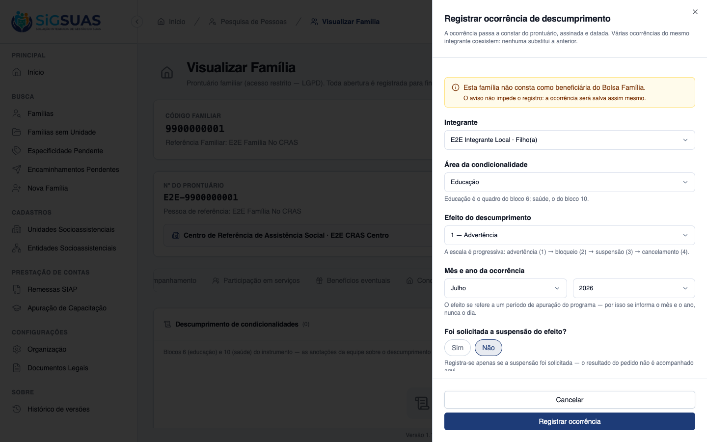
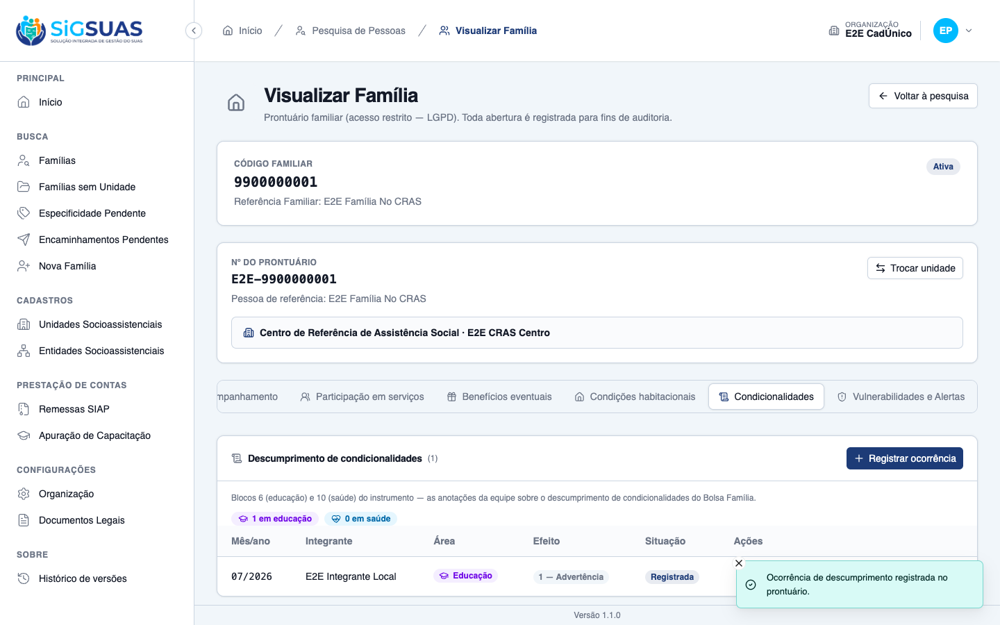
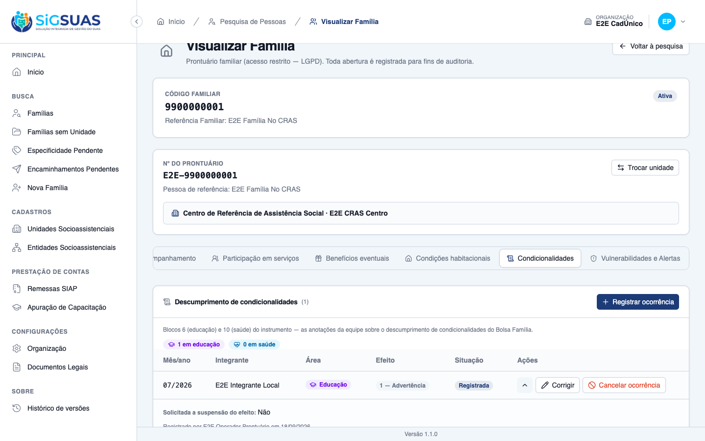
Critério (Gherkin): Dado que a integrante descumpriu condicionalidade de pré-natal Quando eu registrar a ocorrência na área de saúde Então ela é salva com a mesma estrutura da ocorrência de educação E as duas áreas são distinguíveis na consulta
Como foi testado: Novo registro no mesmo formulário, com área Saúde, efeito 1 — Advertência, Agosto/2026.
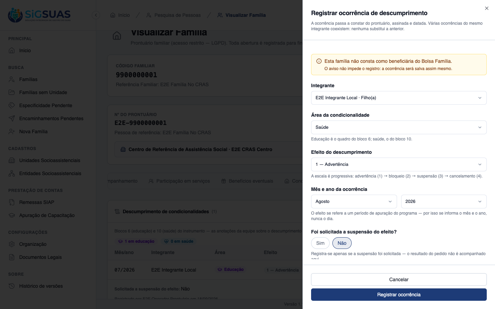
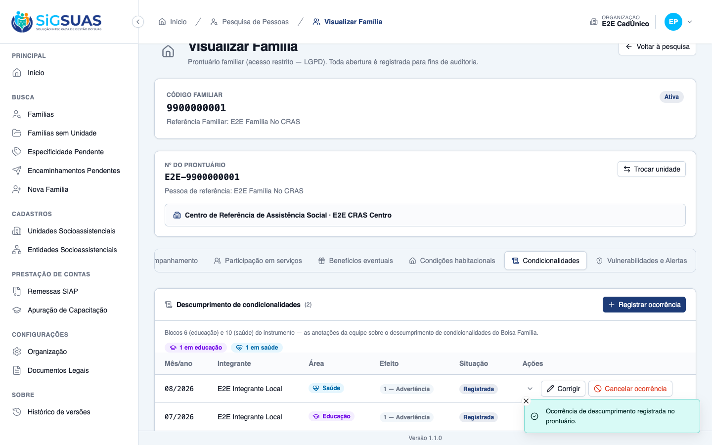
Critério (Gherkin): Quando eu escolher o efeito Então me são oferecidos advertência, bloqueio, suspensão e cancelamento, com os códigos 1 a 4
Como foi testado: Abrir o seletor de efeito no formulário de registro.
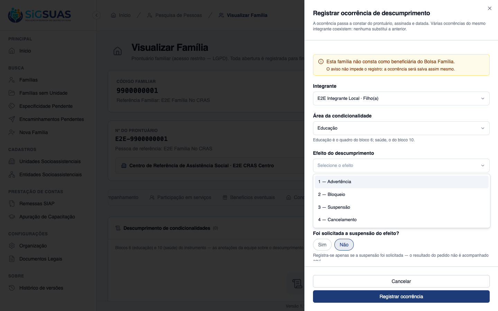
Critério (Gherkin): Quando eu informar a data Então me são pedidos o mês e o ano, não o dia
Como foi testado: Observar o campo “Mês e ano da ocorrência” no formulário.
Critério (Gherkin): Dado que o integrante já tem uma ocorrência de advertência registrada Quando eu registrar outra, de bloqueio, em mês posterior Então as duas constam E a primeira não foi substituída
Como foi testado: Registrar, para o mesmo E2E Integrante Local, uma ocorrência de Educação, 2 — Bloqueio, Agosto/2026.
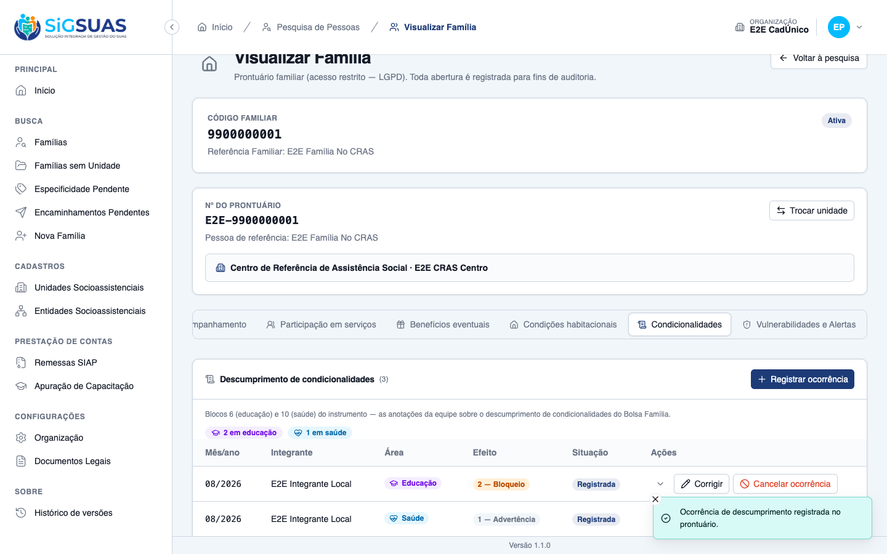
Critério (Gherkin): Dado que o município pediu a suspensão do efeito de um bloqueio Quando eu marcar que a suspensão foi solicitada Então o valor é salvo junto à ocorrência
Como foi testado: No registro do bloqueio (CA05), marcar Sim em “Foi solicitada a suspensão do efeito?”.
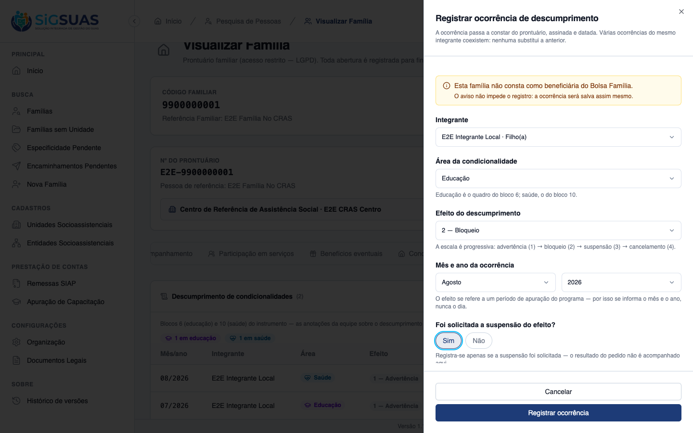
Critério (Gherkin): Dado que a família está sem informação sobre Bolsa Família Quando eu registrar uma ocorrência de descumprimento para um integrante dela Então a ocorrência é salva E o sistema avisa que a família não consta como beneficiária, sem impedir o registro
Como foi testado: A família usada tem o indicador de Bolsa Família vazio no banco. Abrir o formulário de registro e salvar normalmente.
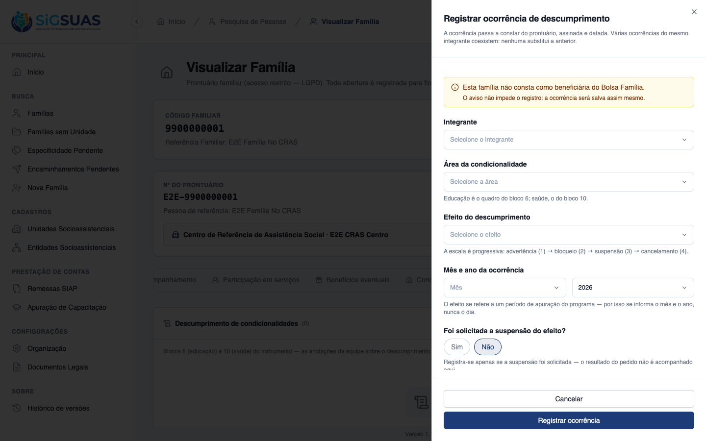
Critério (Gherkin): Dado que a família não tem nenhuma ocorrência registrada Quando eu consultar o prontuário Então não há declaração de que ela está em cumprimento de condicionalidades E a ausência é apresentada como ausência de anotação
Como foi testado: Captura feita antes de qualquer registro, na primeira abertura da aba Condicionalidades.
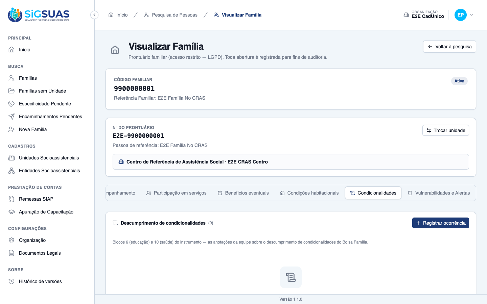
Critério (Gherkin): Dado que registrei uma ocorrência no integrante errado Quando eu cancelá-la informando o motivo Então ela permanece visível marcada como cancelada E deixa de compor o perfil do período
Como foi testado: Na linha 07/2026, acionar Cancelar ocorrência, informar o motivo e confirmar.
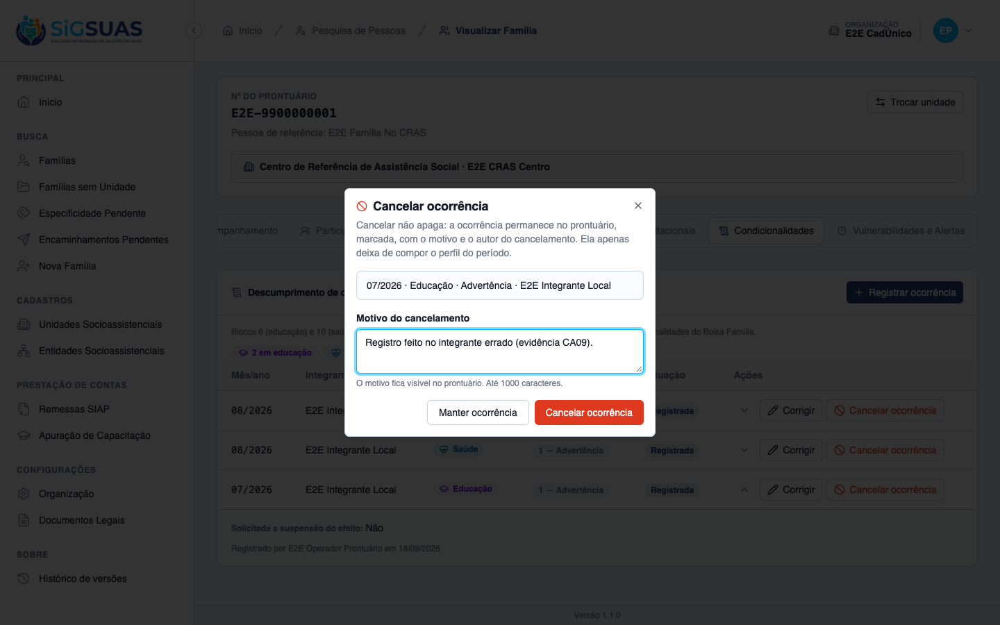
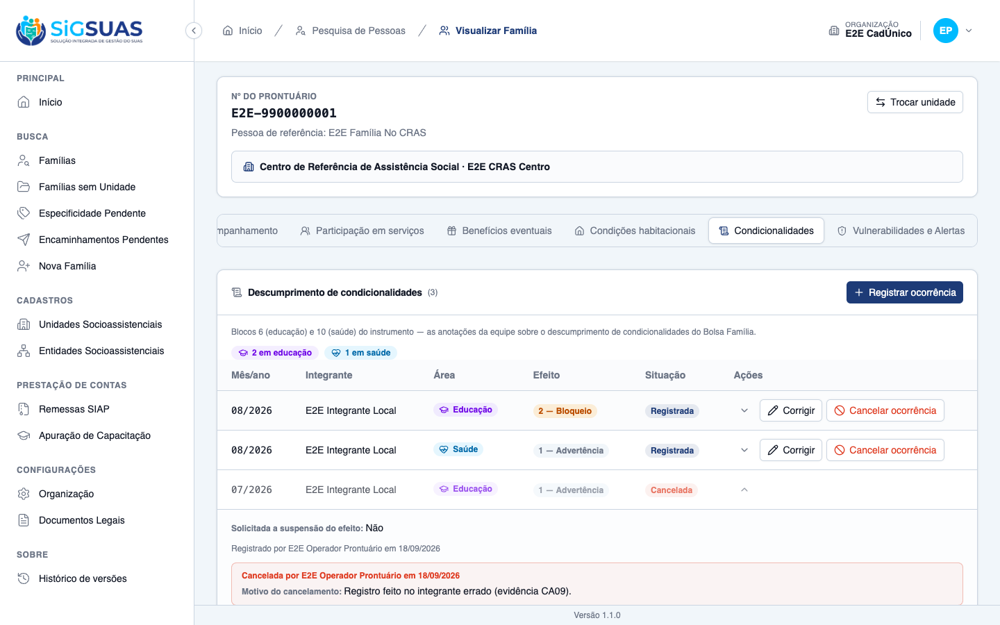
Critério (Gherkin): Dado que sou Operacional lotado apenas em outra unidade E que a família é referenciada no "CRAS Centro" Quando eu tentar registrar uma ocorrência para ela Então não é permitido E a tela informa o motivo, sem nomear as unidades envolvidas
Como foi testado: Login com um Operacional, com add-on LGPD, lotado apenas no E2E CRAS Sem MDS, e abertura direta do prontuário da família.
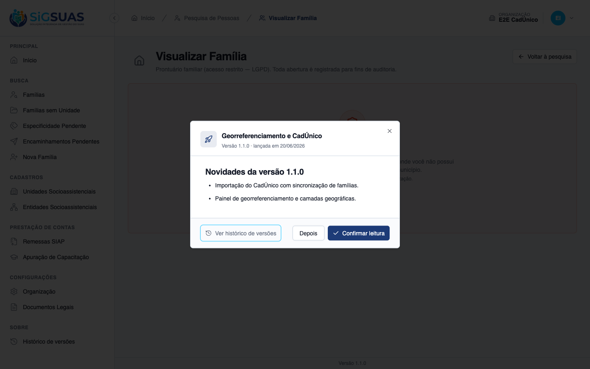
Critério (Gherkin): Dado que sou usuário do município A Quando eu registrar ou consultar ocorrências Então alcanço somente famílias do município A
Como foi testado: Critério de backend: exige um segundo município, que a massa do navegador não tem.
Evidência por cobertura automatizada — ver Anexo.
A massa semeada não tem nenhum Operacional com add-on LGPD lotado só numa unidade que não acesse a família. O operador sem lotação vigente não serve: ele é barrado já no login. Para exercer o critério, criei um Operacional temporário lotado apenas no E2E CRAS Sem MDS. Ele foi removido do banco ao fim da captura, com a lotação e os papéis.
Ficaram três ocorrências na família E2E Família No CRAS, todas do integrante E2E Integrante Local: 07/2026 educação (cancelada, com motivo), 08/2026 saúde e 08/2026 educação com suspensão solicitada. Elas ficam no prontuário, como a regra exige.
O resumo no topo da aba (“2 em educação · 1 em saúde”) conta as linhas exibidas, incluindo a cancelada. Não é a apuração do leiaute 15.7: a saída da ocorrência cancelada do perfil do período está provada pela suíte, que só conta registros com situação “registrada”. Fica registrado para que ninguém leia o contador da tela como número apurado.
Captura contra o client em :5175, o dev server já em execução, identificado pelo diretório do processo e pelo título da página. As migrations da fase foram aplicadas e o E2ESeeder reexecutado antes da captura. Nenhum arquivo de configuração foi alterado.
PASS Tests\Unit\ConditionalityBreachInvariantTest ✓ it accepts a REGISTERED row with the three cancellation columns NUL… 0.54s ✓ it accepts a CANCELLED row with date, author and reason filled 0.03s ✓ it REFUSES a registered row carrying any cancellation column with d… 0.03s ✓ it REFUSES a registered row carrying any cancellation column with d… 0.03s ✓ it REFUSES a registered row carrying any cancellation column with d… 0.03s ✓ it REFUSES a cancelled row missing any of the three cancellation co… 0.03s ✓ it REFUSES a cancelled row missing any of the three cancellation co… 0.03s ✓ it REFUSES a cancelled row missing any of the three cancellation co… 0.03s ✓ it REFUSES a cancelled row missing any of the three cancellation co… 0.03s ✓ it REFUSES an unknown status — the column has exactly TWO values 0.03s ✓ it publishes the invariant as a PRODUCTION contract shared by the t… 0.03s ✓ it warns — and never throws — for a family that is not a PBF benefi… 0.03s ✓ it warns — and never throws — for a family that is not a PBF benefi… 0.03s ✓ it warns — and never throws — for a family that is not a PBF benefi… 0.03s PASS Tests\Feature\Api\Client\FamilyConditionalityBreachTest ✓ it registers an education breach with status registered, signed and… 0.13s ✓ it registers a health breach with the same structure and keeps both… 0.09s ✓ it offers the four effect codes 1..4 in ascending severity through… 0.08s ✓ it refuses any effect outside the four instrument codes (CA03) with… 0.07s ✓ it refuses any effect outside the four instrument codes (CA03) with… 0.07s ✓ it refuses any effect outside the four instrument codes (CA03) with… 0.07s ✓ it refuses any effect outside the four instrument codes (CA03) with… 0.07s ✓ it refuses any area outside education and health (CA03) 0.07s ✓ it exposes month and year and NO full-date field at all (CA04) 0.07s ✓ it refuses a month outside 1..12 (CA04) with (0) 0.07s ✓ it refuses a month outside 1..12 (CA04) with (13) 0.07s ✓ it refuses a month outside 1..12 (CA04) with (-1) 0.07s ✓ it refuses a breach dated IN THE FUTURE, including a later month of… 0.08s ✓ it caps the form at the CURRENT month through options (§10) 0.07s ✓ it keeps several breaches of the SAME member, none replacing the pr… 0.08s ✓ it accepts two breaches of the same member, same area AND same mont… 0.09s ✓ it has NO unique index on the breaches table (D07) 0.07s ✓ it stores suspension_requested alongside the breach (CA06) 0.07s ✓ it requires an ANSWER for suspension_requested — it has no third st… 0.07s ✓ it registers with 201 AND a warning when receives_pbf is NULL or fa… 0.07s ✓ it registers with 201 AND a warning when receives_pbf is NULL or fa… 0.07s ✓ it warns in options too, so the form can warn BEFORE the submit (CA… 0.07s ✓ it answers an EMPTY list and asserts NOTHING about compliance (CA08… 0.07s ✓ it has NO compliance column on the table (D10) 0.06s ✓ it cancels instead of deleting: status cancelled, reason recorded,… 0.08s ✓ it requires cancel_reason on the DELETE (§7.3) 0.08s ✓ it answers 409 when cancelling an ALREADY cancelled breach (§7.3) 0.08s ✓ it answers 409 when EDITING a cancelled breach (§7.2) 0.08s ✓ it corrects a breach registered on the WRONG member, keeping the au… 0.08s ✓ it refuses server-owned fields on the write (RN07/RN10) with datase… 0.07s ✓ it refuses server-owned fields on the write (RN07/RN10) with datase… 0.07s ✓ it refuses server-owned fields on the write (RN07/RN10) with datase… 0.07s ✓ it refuses server-owned fields on the write (RN07/RN10) with datase… 0.07s ✓ it refuses server-owned fields on the write (RN07/RN10) with datase… 0.07s ✓ it refuses server-owned fields on the write (RN07/RN10) with datase… 0.07s ✓ it refuses a member from ANOTHER family with 422, without confirmin… 0.07s ✓ it logs the structured fields and keeps notes and cancel_reason OUT… 0.08s ✓ it answers 403 with reason unit_not_assigned, without naming the un… 0.08s ✓ it applies the same denial to the READ side (CA10) 0.08s ✓ it declares NO conditionality-breach ability anywhere (D08) 0.11s ✓ it carries NO can: middleware on the breach routes (D08) 0.06s PASS Tests\Feature\TenantIsolation\FamilyConditionalityBreachIsolationTest ✓ it answers 404 — never 403 — for a family of ANOTHER tenant, on ALL… 0.10s ✓ it never leaks a breach of ANOTHER tenant through MY family uuid (R… 0.07s ✓ it answers 404 when the breach belongs to ANOTHER family of the sam… 0.08s ✓ it scopes the block by tenant_id — my listing never shows the other… 0.08s ✓ it blocks the request when the X-Tenant-UUID points at a tenant the… 0.07s ✓ it refuses a member uuid from ANOTHER tenant with 422 and creates n… 0.07s Tests: 61 passed (259 assertions) Duration: 5.21s